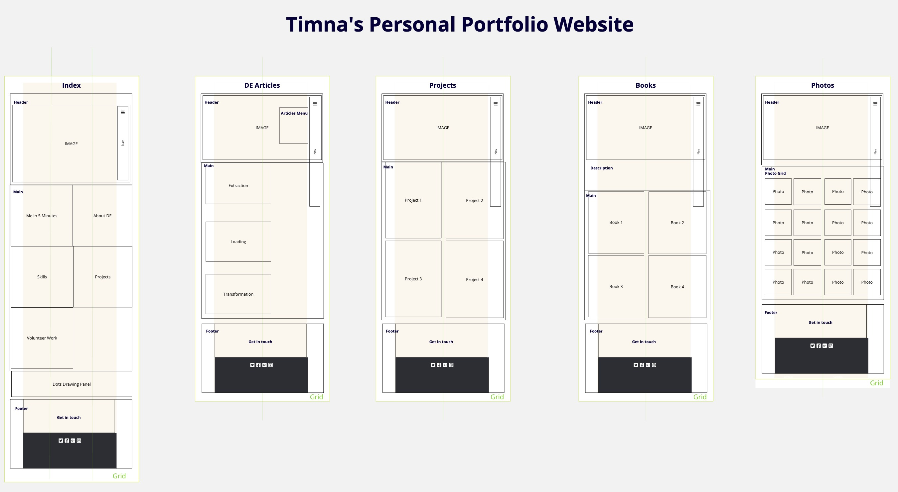
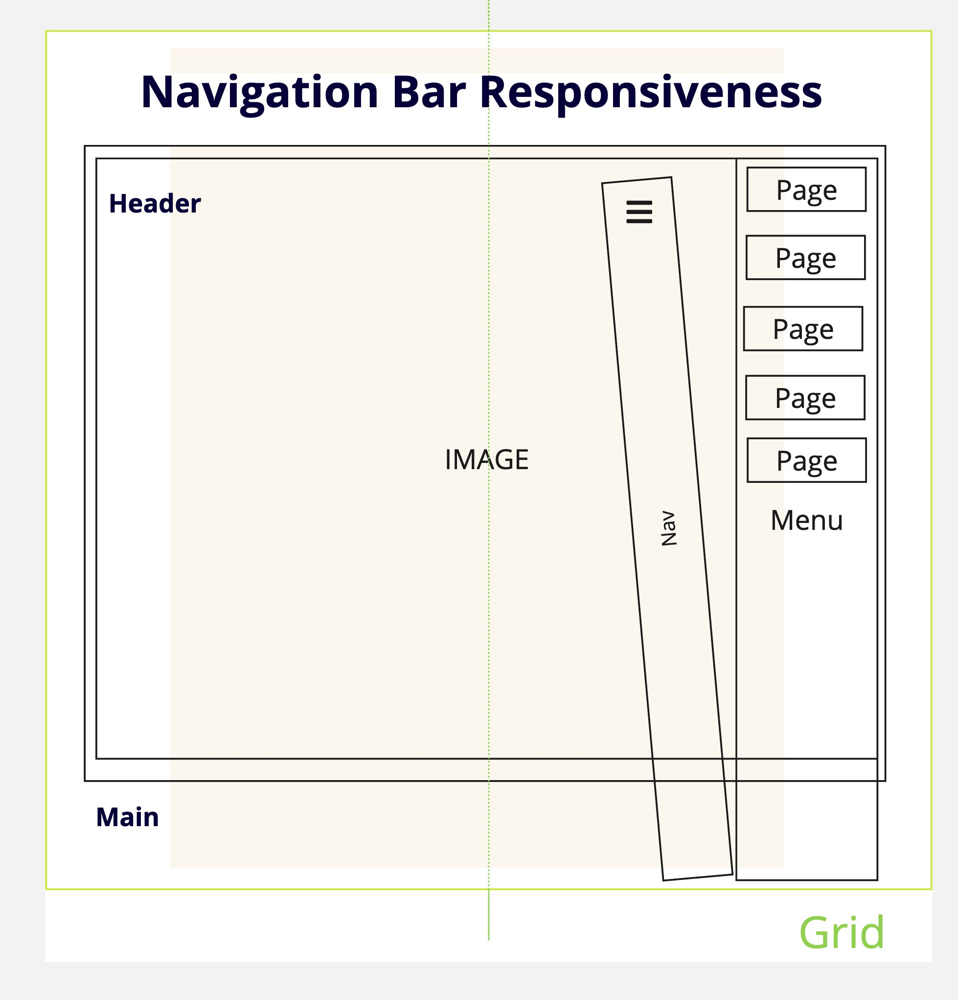

Timna Aversa Personal Portfolio Website Report
Introduction
The Website to Get To Know Me
The essential narrative of my portfolio site is to offer a comprehensive view of my professional journey and personal interests. It aims to present a multifaceted version of myself, encompassing my career in data engineering, my contributions to educational content for children, and my passion for photography. The primary audience for this site includes potential employers, collaborators, and individuals interested in my work and hobbies.
Regarding the structure, I opted for a versatile layout that integrates various elements to reflect different aspects of my professional and personal life. The site features distinct sections dedicated to my projects, writings, and hobbies, each with its own visual and functional characteristics. This approach allows for a clear and organized presentation of my work while ensuring an engaging user experience.
This website was designed with a Web First approach but is responsive to tablets and mobiles too.
Inspiration
My design and functionality choices were influenced by several notable portfolio sites, each contributing unique elements to my project, the following are some examples of it:
- Josh Loves Light: Inspired my photography section's gallery with a clean layout and engaging hover effects.
- Book by Its Cover: The grid layout inspired the structure of my educational materials section.
- Nathalie Lété: Minimalist design elements and dynamic CSS effects influenced my zine portfolio layout.
- Bonus: Netflix's Moxie Zines on Behance: Inspired a handmade fanzine aesthetic for my portfolio design.
Accessibility
- Descriptive Alt Text for Images:
All images on the website are provided with descriptive
alt text, making them accessible to screen readers. This ensures that users who are visually impaired can still understand the context or content of images. Additionally, decorative images that do not add meaning are marked with empty alt="" attributes to be ignored by screen readers, reducing unnecessary noise for users.
- Semantic HTML for Structure:
The use of semantic HTML elements, such as
<header>, <nav>, <section>, and <footer>, provides clear meaning and structure to assistive technologies like screen readers. This allows users with visual impairments to navigate the content in a logical and meaningful order. Additionally, it improves the overall SEO, making the site more accessible to search engines.
- ARIA Attributes:
ARIA (Accessible Rich Internet Applications) attributes are used throughout the website to enhance the interaction experience for users with disabilities. For example, roles and states, such as
aria-labelledby and aria-hidden, help screen readers understand the purpose and status of elements. This ensures that dynamic elements, like interactive menus or forms, are accessible and understandable to users who rely on assistive technologies.
- High Contrast Colors and Readability:
The website uses high-contrast color schemes to improve readability for users with low vision or color blindness. Text and background colors are chosen carefully to ensure they meet Web Content Accessibility Guidelines (WCAG) standards for contrast ratios, which helps all users, especially those with visual impairments, read content easily without strain.
Usability
- User-Friendly Navigation:
The website features a clear and simple navigation structure that is easy for users to understand. The top navigation menu is fixed, allowing users to access key sections of the site without having to scroll back to the top. For mobile users, the navigation adapts to a vertical format for easier tapping and scrolling. This ensures users can easily move between different sections, regardless of their device.
- Accessibility Features:
The site incorporates several accessibility best practices to make it usable for a broader audience, including those with disabilities. ARIA labels are used to enhance navigation for screen readers, ensuring visually impaired users can interact with the content. The site also features high-contrast text for readability, appropriate alternative text for images, and semantic HTML elements to improve the browsing experience for users with cognitive impairments.
- Clear Visual Hierarchy:
The design implements a clear visual hierarchy, helping users identify important information quickly. Large, bold headings, contrasting colors, and appropriate spacing guide the user's eye through the page in a logical order. This hierarchy ensures that key content, such as project descriptions and contact information, stands out and is easily scannable.
- Clear and Concise Content:
The website’s content is written in a straightforward and concise manner, making it easy for users to digest. Important information, such as project descriptions and contact details, is presented clearly and without unnecessary jargon. This enhances the overall usability by allowing users to quickly find the information they need without getting overwhelmed by text-heavy pages.
- Interactive Elements and Feedback:
Interactive elements, such as hover effects on project images and buttons, provide immediate feedback to users. These subtle animations and transitions improve the usability by making the interface feel more dynamic and engaging. Users are visually cued when an action is possible, such as clicking a button or viewing additional information, reducing uncertainty and improving the overall interaction experience.
Learning
- JSON Integration:
I learned how to use JSON (JavaScript Object Notation) to store and retrieve data dynamically on the website. This allowed me to separate the content from the HTML structure, making it easier to update and manage the data without altering the core HTML. By loading JSON data through JavaScript, I was able to create a dynamic photo gallery and project listing section. This also improved website performance by minimizing hardcoded content.
- Handlebars.js Templating:
I explored Handlebars.js as a templating engine for rendering dynamic content on the site. It was a challenge at first to grasp the syntax and logic, but once I understood how to pass variables and use conditionals/loops within the templates, it greatly improved the workflow. I applied this to generate project cards dynamically based on the JSON data. The modular nature of Handlebars.js helped me maintain cleaner and more reusable code, separating the content logic from the presentation.
- CSS Z-Index and Layering:
While working on the visual design, especially the overlapping image gallery, I had to master the use of CSS `z-index` to control how elements stack on top of each other. Understanding how z-index interacts with the element’s positioning context (like relative, absolute, fixed) was key to achieving the desired visual effects. This was particularly useful for creating layered sections with images and text elements that required careful placement without disrupting the flow of the content.
- Responsive Web Design:
Creating a fully responsive design was one of the primary goals. I learned how to use media queries effectively to adjust layouts, font sizes, and images depending on the user's screen size. This allowed the website to adapt to different devices (desktop, tablet, and mobile) without losing functionality or aesthetics. I explored grid layouts, which helped simplify the alignment and resizing of elements across various screen sizes.
- Accessibility Best Practices:
I gained a deeper understanding of accessibility standards, such as ensuring proper color contrast ratios for readability, providing alternative text for images, and using semantic HTML tags. I also learned how to implement ARIA (Accessible Rich Internet Applications) attributes for enhanced screen reader support, making the website more navigable for users with disabilities.
- AI Usability:
I gained a deeper understanding on how to utilize AI tools, like Chat GPT and Claude, on the process of reviewing code, on expanding the commentary and to highlight accessibility points of improovement.
Evaluation
1. What aspects of your work do you think were particularly successful? Why?
The use of Handlebars.js and CSS Grid was successful in creating a dynamic, visually engaging gallery. The reusable footer and navigation components improved code efficiency and maintainability.
2. What aspects of your work could be improved? How might you do things differently another time?
Improving the styling of dynamically generated content and incorporating varied image sizes in the photography gallery could enhance user engagement. I also plan to explore 3D elements in future projects to enrich interactivity and visual appeal.
Appendices
Site map, wireframes, and mock-ups provide a visual understanding of the site's structure and design.
The Website is composed of 5 html pages an adjecent page was created for the report about the creation of the website, the Wireframe of shuch can be seen on the image bellow.

There is also a wireframe of the nav bar apperance when activated.

{kind=link}